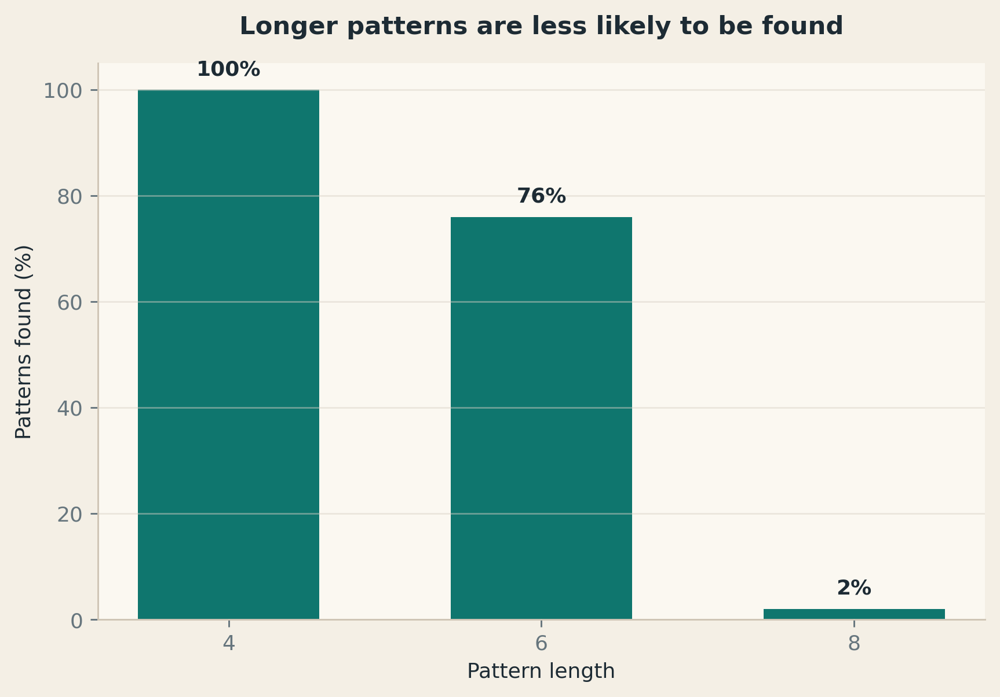
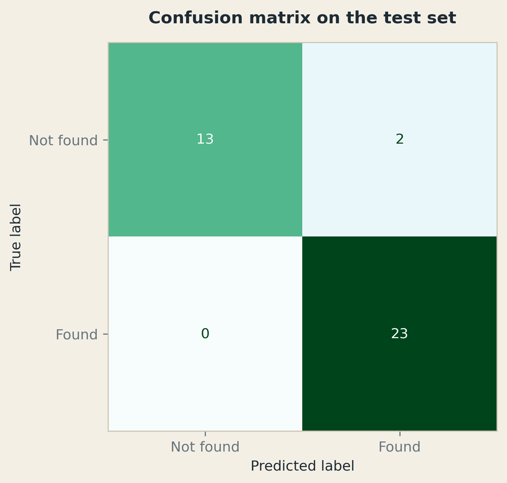

Can pattern length predict whether a number appears in the first one million digits of π?
Mohamed Taha Khorchani · 2026
01 · Research question
Research question Can the length of a numerical pattern predict whether it appears in the first 1,000,000 decimal digits of π?
Why this matters In a finite sequence, longer exact patterns are harder to observe because the number of possible digit combinations grows rapidly with pattern length. This study tests whether pattern length alone contains enough information for prediction.
For a specific pattern of length L, a simple uniform-digit model gives the approximate expected number of occurrences:
E(L) ≈ N / 10L
N = number of digits searched · L = pattern length
For N = 1,000,000:
L = 4E(L) ≈ 100
L = 6E(L) ≈ 1
L = 8E(L) ≈ 0.01
This provides a mathematical reason to expect pattern length to influence detectability.
All patterns are defined before searching π to avoid selecting examples based on their outcome.
The set contains birthdays, repeated digits, counting sequences, palindromes, and arbitrary numbers. Pattern category is retained in the data but is not used as a predictor.
plot_data = summary.reset_index()fig, ax = plt.subplots()bars = ax.bar( plot_data["length"].astype(str), plot_data["found_percent"], color="#0f766e", width=0.58)ax.set_xlabel("Pattern length")ax.set_ylabel("Patterns found (%)")ax.set_title("Longer patterns are less likely to be found", pad=14)ax.set_ylim(0, 105)ax.grid(axis="y")ax.spines[["top", "right"]].set_visible(False)for bar, value inzip(bars, plot_data["found_percent"]): ax.text( bar.get_x() + bar.get_width()/2, value +2,f"{value:.0f}%", ha="center", va="bottom", fontweight="bold" )plt.show()

Initial pattern
The observed match rate decreases sharply as pattern length increases:
4 digits: 50/50 found
6 digits: most found
8 digits: almost none found
Key observation Pattern length is strongly associated with whether a match is observed within a fixed search space.
05 · Predictive model
The task is binary classification: predict found or not found from pattern length.
A shallow Decision Tree Classifier estimates threshold-based relationships between length and outcome.
1 · Data150 patterns
2 · VariablesX = length y = found
3 · Splittrain / test
4 · Fitdecision tree
5 · Evaluatebaseline · accuracy · F1
The data are divided into training and test sets. Model performance on the held-out test set is used to assess generalisation.
Show Python code
# Feature and targetX = targets[["length"]]y = targets["found"]# Train/test splitX_train, X_test, y_train, y_test = train_test_split( X, y, test_size=0.25, random_state=42, stratify=y)# Create and fit the modelmodel = DecisionTreeClassifier(max_depth=2, random_state=42)model.fit(X_train, y_train)# Predict the test sety_pred = model.predict(X_test)
Learned decision rule
The fitted model separates the three observed pattern lengths using two thresholds. The diagram below shows the learned rule without internal tree diagnostics.
A majority-class baseline is also evaluated. It always predicts the most common class and provides a reference for whether the decision tree adds predictive value.
Additional metrics describe performance from different perspectives:
Precision: proportion of predicted matches that are correct
The confusion matrix separates correct classifications from false positives and false negatives.
It shows the error structure behind the summary metrics.
Show Python code
fig, ax = plt.subplots(figsize=(5.8, 5.0))ConfusionMatrixDisplay.from_predictions( y_test, y_pred, display_labels=["Not found", "Found"], cmap="BuGn", colorbar=False, ax=ax)ax.set_title("Confusion matrix on the test set", pad=14)plt.show()

07 · Interpretation
The theoretical relationship E(L) ≈ N / 10L predicts a rapid decline in expected occurrences as pattern length increases. The observed data follow the same general pattern.
The decision tree converts this relationship into simple length thresholds. Test accuracy is compared with a majority-class baseline to determine whether the predictor adds information beyond the most common outcome.
The confusion matrix shows where the simplified rule succeeds and where it fails.
Interpretation Within a fixed one-million-digit search, pattern length contains useful predictive information because longer exact patterns have many more possible combinations and are therefore harder to encounter.
The model estimates detectability from pattern length; it does not test whether the digits of π are random.
08 · Example pattern lookup
A final example checks whether one numerical pattern appears in the first one million digits after the decimal point.
This lookup is illustrative and is not used for model training.
Show Python code
my_pattern ="123321"# Change this numberifnot my_pattern.isdigit():print("Enter digits only.")else: position = pi_text.find(my_pattern)if position ==-1:print(my_pattern, "was not found in the first million decimal digits of π.")else:print(my_pattern, "was found.")print("First position after the decimal point:", position +1)
123321 was found.
First position after the decimal point: 933909
09 · Conclusion
Finding Pattern length is a useful predictor of whether a predefined number is observed within the first one million decimal digits of π.
The mathematical expectation
E(L) ≈ N / 10L
explains the central result: as pattern length increases, the number of possible exact digit strings grows exponentially, so individual patterns become harder to observe in a fixed search.
The machine-learning model captures this relationship using simple length thresholds and is evaluated against a majority-class baseline.
Broader relevance
The same framework applies to other sequence-search problems in which pattern size affects detectability, including symbolic sequences, encoded data, and biological sequence analysis.
Limitations
The 150 patterns are predefined and are not a random sample of all possible numerical strings. Results are therefore specific to this pattern set and search depth. The analysis does not test whether the digits of π are random.
Future work
The analysis can be extended by:
increasing the number and range of pattern lengths
repeating the experiment at different search depths
adding pattern structure as an additional predictor
comparing multiple classification models
applying the same framework to other numerical, symbolic, or biological sequences
These extensions would test whether the observed length effect remains stable under broader conditions.